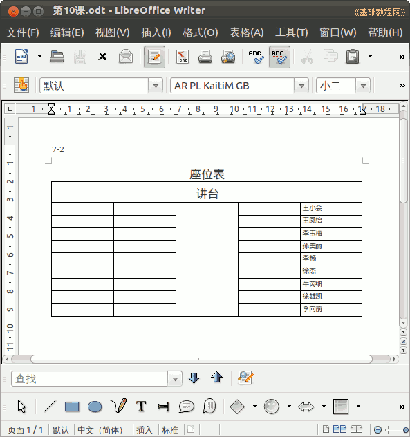

2012-2013 第二学期七年级文字处理和网页教学设计
作者：TeliuTe 来源：基础教程网
十、学会合并单元格 返回目录 下一课
（一）教学设计
1、学习目标：学会合并单元格
2、注意事项：绕过弯来，既不要跳也不要落，一楼过了二楼
3、教学过程：
1）教师准备学案和板书；
2）学生整队进入，开机抄黑板上笔记；
3）教师讲解板书演示操作；
4）学生打指法、日志、完成操作；
5）教师打勾记录学生指法成绩，检查日志和操作；
注：学生抄完笔记就开始打指法、日志，老师讲完后再继续完成；
（二）板书设计(学生笔记)
第10课 学会合并单元格
1.微机室坐位是第 ？ 行 ？ 列
2.选中讲台一行，点“表格，合并单元格”
3.选中中间过道一列，“表格，合并单元格“
4.把自己组员填如表中
--
--操作指南--
是一张微机室里的座位表
（10行五列，第1排讲台合并、纵向第三列中间过道合并）
操作图示：

（三）课后记 2013-03-29 18:01
--
调个课都能搞错真是无语，一会下节课看哪个班来上
弄不清的写个纸条也行，说半天还是搞错了
--
发现绕弯还是有些困难，所以就简单地来讲
有的学生没认真听，后面再单独教一下了，生气也不会再讲下好了
--
行和列不会数，或者是没心思数
习惯于老师给的答案是最好的，自己的答案总是有漏洞
--
选中还有些困难，光电鼠标会跳
搞不清是怎么回事，操作上多要求
--
跟上节课差不多，接着学一下表格
两节课把表格的知识点学完，很快又会还给老师
--
跟着老师做东西很快就做出来了，自己做则有困难
平时没有自己做的习惯，应对考试的能力比较差了
--
把撤消讲了一下，前面有意做错一次，输了4列把过道漏了
这样以后可能讲撤消的时候会好一点
返回目录 下一课
本教程由86团学校TeliuTe制作|著作权所有
基础教程网：http://teliute.org/
美丽的校园……
转载和引用本站内容，请保留作者和本站链接。